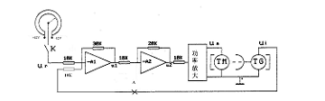
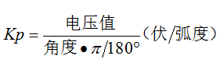
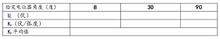
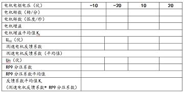
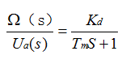
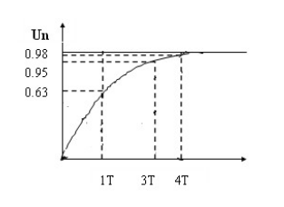

1、掌握典型元部件参数的测试方法，建立系统的数学模型
2、掌握实验技术和实验仪器的正确使用以及实验结果的处理和分析
3、加深对“系统结构图、传递函数”等理论知识的理解。
1、XSJ-2型小功率直流随动系统学习机
2、TAP-2 型控制理论模拟实验装置
3、数字万用表
4、智能型数字转数表
将系统按图1联接，断开反馈电位计（A处断开）使整个系统处于开环状态 。
图1
1) 各级放大器增益的测试、功率放大器零点的调整
功率放大器零点的调整：将A2、A3断开，使A3输入端= 0 (输入端X13接地)，反复调节运放A3
“平衡调节”电位器(控制箱面板A3的上方，RP8)，使输出端(X19)电压Ua= 0。
各级放大器增益的测试：将系统按图1联接，加入给定电位计使它转过一个角度，
使Ur= 0.5V，调整RP7，将功率放大器增益调成3左右，分别测试A1、 A2、功率放大器增益的输入输出电压，计
算各级放大器增益：
2) 电位器传递系数KP的测定：
给定电位器和反馈电位的结构参数相同，其电源电压为土12V，电位器量大有效工作角度为330。。这两个电位器都装有刻度盘和 指针线。测量KP时，利用给定电位器或反馈电位器均可以。测量的具体方法是：将电位器的转轴对准某一角度， 测量其输出电压（应接通电位器的负载)，然后将电器转轴转过一个角度，例如转过10。，再测量其输出电压，于是可以求得电 位器的传递系数即，不同位置多测几点，求其平均值，就能得到KP，
3)反馈系数的测定
反馈环由测速电机、分压电路组成。测速电机反馈系数= UXS2/电机转数（弧度/秒） 将电位器的转动某一角度，使电机转动，调整RP9，使分压比为1：10(Un=UXS2/10),
4）电动机参数的测试
死区电压：自Ur = 0，旋转给定电位器到电机刚刚开始 转动，读下这时的Ua，将电机的起始位置放在几个不同的位置，重复实验；将输入电压反极 性重复实验，可得两个转动方向的死区电压平均值。
电动机时间常数Tm的测定：
因控制电机电枢绕组电感相对电动机转子惯量的影响小得多,在建立电动机的数学模型时，常将电枢绕组的电感忽略小计。
这样，电动机的传递函数可近似用下式表示：

式中 Ua(s)一电动机的输入电压；Ω(s)一电动机输出的角速度；
Kd一电机增益平均值，已在前一项实验测出。
电动机的时间常数Tm可以用几种不同的实验方法求得。
例如，根据电动机的机械特性和电机转子的转动惯量，
利用Tm的计算公式求得，如果转子转动惯量不知道，可以用重锤法或扭摆法测出；当电动机与测速发电机组装在一起时，
采用频率特性法或阶跃响应法测量Tm比较方便。这里采用阶跃响应法。
图2
在开环系统(图1) 中，由于放大器都可认为是无惯性环节，操纵开关 K对电动机施加阶跃输入作用，将测速发电 机的输出电压接到TAP-2 型模拟实验装置（图2），便可记录电动机转速变化的阶跃响应曲 线．根据这条曲线便可确定电动机的时间常数Tm（图3）。
图3
方法：闭合开关K，旋转给定电位器，使电动机电枢电压为10V, 调整RP9，使Un=1V(便于读数),断开K；设定A/D；
阶跃信号的获取：
连接X1、Xa
S1即为开关K，由于S1中接有10K电阻，（见XSJ-2型小功率直流随动系统学习机使用说明中的图2），因此，应将X3接到A1的反相输入端
，启动采样，闭合开关K ，待采样结束后，在曲线上读取T（0.63Un）,重复测两次；
旋转给定电位器，使电动机电枢电压为15V,重复上述内容。
将系统按图1联接，将反馈电位计接入（RP9分压比为1：10），使整个系统处于闭环状态（思考：若是正反馈应怎么办?）
旋转给定电位器，使Ur = 1V，断开K。加入阶跃信号（K闭合），观察电机转动情况；
旋转给定电位器，使Ur = -1V，断开K。重复上述实验。
1.根据实验测定的各元件参数，绘出系统的动态结构图。
2.在图1所示系统中，当接入测速反馈时若出现正反馈现象，这是什么原因造成?应该怎样改变接线?
3.将实验测定的参数K1、K2、反馈系数与理论值比较（列表），分析误差产生的原因。
4.对实验结果的分析、讨论。